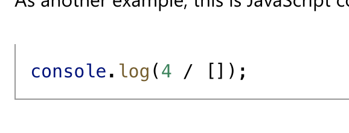
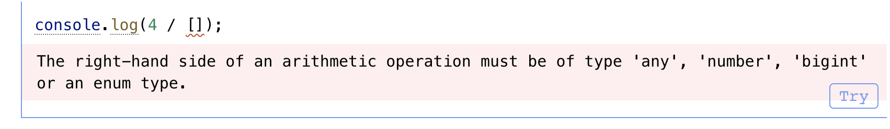

TS 和 JS 的关系是什么呢？
TypeScript 这门语言是 Javascript 的超集。所以 JS 的语法同样遵守 TS 的语法规则。JS 的代码可以放到 TS 文件中运行。
TS 是 JS 类型上的超集，即增加了如何使用不同的值的规则。
下面的 JS 代码不会报错，并且会 log 一个值。

但是 TS 认为数据除一个 number 是没有意义的，并且会抛出一个错误。

TS 的类型检查器会尽可能多的捕捉常见的错误，来保证项目的正确性。
TS 保留了 JS 的运行时行为。TS 不会改变 JS code 的运行时行为。例如：除以 0 时，JS 会抛出 infinity 的结果，而不是一个运行时错误。 TS 不会改变这些行为。
编译后的 TS 代码会成为纯粹的 JS 代码，所以最终的代码里面是没有类型的。
TypeScript 没有提供其他额外的运行时的库。所以，TS 项目里也是使用与 JS 相同的标准库。